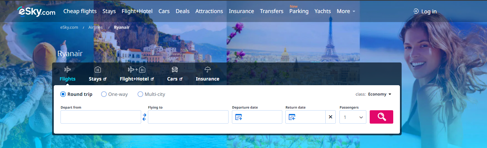
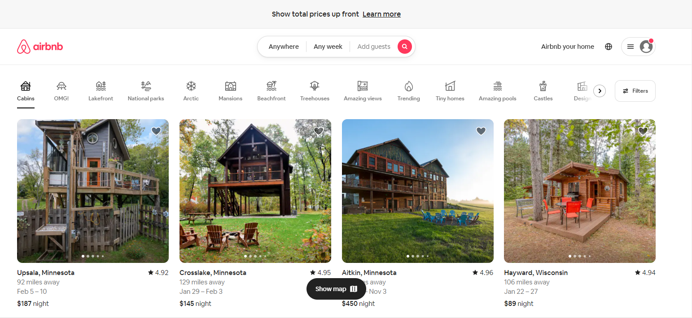

UX Design: The Good, The Bad, and The Intentional?
Design is a hobby, not a profession: Talent and knowledge paired with creativity
I am not a terribly strong UX designer myself, I try to focus on two features:
- My Audience: Who will see my design and enjoy it.
- Matching color contrasts: What colors create visibility.
I find myself loving the capabilities of HTML and Web Development.
Graphical games with images and backgrounds are a trend that's ever present. However, this style of design creates
difficult navigations.
Consider the examples below of two leisure websites, an airline and a lodging site both value your attention
equally. I find one more compelling than the other.
I decided to look for two websites and compare their design.
My first action: logging in/creating account.
Bad UX Design

The image of happy people and beautiful places immediately captures my attention. This focuses my eyes
directly to the flights and booking block faded above the image. Everything else I see is blue, so I naturally
scroll down. I reached the bottom of the page. I'm nestled deep in the site map and still no account login.
I found myself immediately frustrated when the next site displayed a clear navigation bar faded in the top border.
I'm now over this website entirely. What happened?
A modern approach to design faded above the image is hard for me to see, it's impossible for Granny trying
to schedule a flight for the gran-kids. The target audience for this website is wide and a portion is being
blatantly ignored.
How can we improve the design:
- Include photos that are the same solid color under the Navigation Tabs
- Display the Navigation Tabs on a new Row
- Use a darker color fade in the Navigation Tabs
- Decrease the transparency of the Navigation Tabs
Bad UX Design: Ryanair
Good UX Design

This UI design effectively utilizes images of available properties to tell a story about my next weekend out.
The design is terribly effective. Note the color palette, simple black lettering bolding to drive location information.
Even the user account and login icon features the iconic "New Notification" bubble directing me there
immediately to locate an account setup.
I'm now planning a 3-hour drive to Wisconsin to explore a cabin! So what happened?
Even the icon are effective at communicating with just about any audience, for me: this site features many
simplicity design elements that made navigating the page fun. I can easily find a host of locations with great ease.
Good UX Design: AirBNB